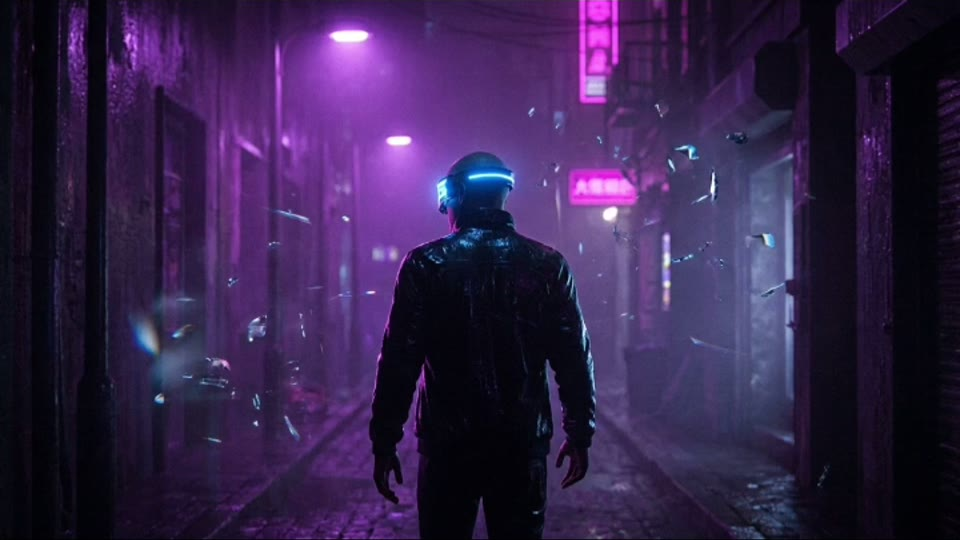
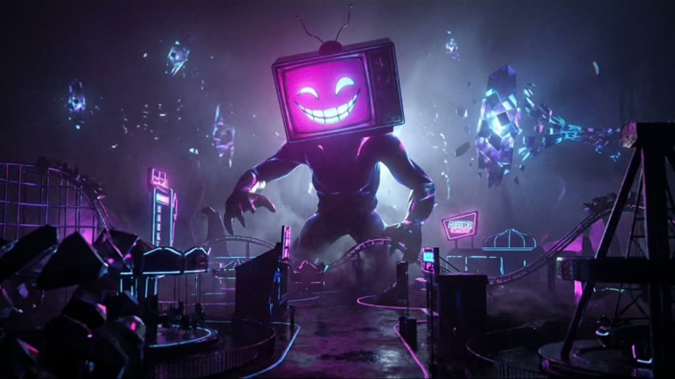
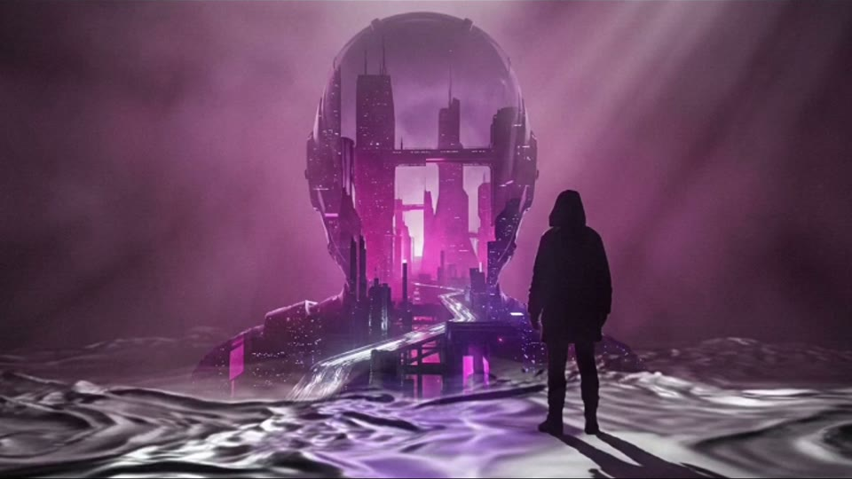

Brand guide
2026
A community for creating and sharing with generative tools.
What to say
One word, always lowercase. In a sentence and in the logo. Not ParaScene, not Para Scene, not PARASCENE.
parascene is a community for creating and sharing with generative tools.
parascene is a peer-to-peer network for people who care about machine learning, generative art, and algorithms, the old ways and the new ones. Creativity, community, and technology live in one place, so people can create, share, and discover without gatekeepers.
Tools that support your ideas, not replace them.
A shared space for making, feedback, and collaboration.
AI, machine learning, and algorithms that make creation accessible.
Logo
On night, #0f0d1a. Wordmark in mist, #ede9fe. The middle of the word sits at 70% opacity. Keep that.
On paper
Ink, #0f172a, on paper or white. Same file, same opacity. Do not redraw it in a font, and do not set “parascene” in italic Geist and call it the logo.
App mark
Violet tile, white italic p. For favicons, avatars, and square crops. Smallest useful size is 24px. Do not set the wordmark inside the tile, and do not change the gradient.
Leave half the wordmark’s height empty on every side. Do not lock it against another logo.
Wordmark no smaller than 1.25 inches wide in print, or 120px on screen.
Ink on light grounds, mist on night. Violet and signal green are for interface, not for recoloring the letters.
Colour and type
The public page is night, with signal green for the action. Inside the app, paper uses violet for the accent and night uses signal green. Keep that pairing. Green buttons belong on night. Violet buttons belong on paper.
Violet is the daytime accent. Signal is the nighttime accent, including the public Enter button. Muted is secondary text on paper. Muted night is secondary text on night.
The product face for everything that is not the logo. Weights in use are 400, 500, 600, and 700. Fallback: Segoe UI, Roboto, Helvetica, Arial, sans-serif.
Geist is an open font, at fonts.google.com/specimen/Geist. The wordmark is custom lettering. Do not approximate it with italic Geist.
Pictures you can use
These five frames are on the public homepage. You may use them, and the film, to show parascene. Credit parascene. Do not place another logo on the picture, and do not present the pictures as your own work.
splash-poster-cliff.jpg



Film: parascene.com/assets/splash.mp4. Other creations on the site belong to members and are not cleared here. Ask before using anything that is not in this pack.
Files
Logo files, the typeface, the colours on the previous page, and the five stills. Paths below are on parascene.com once this folder is deployed.